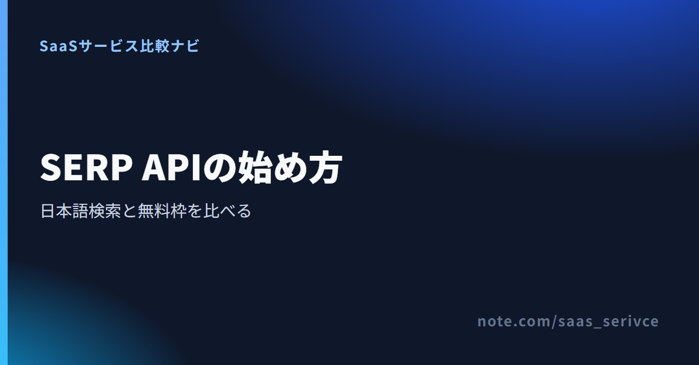
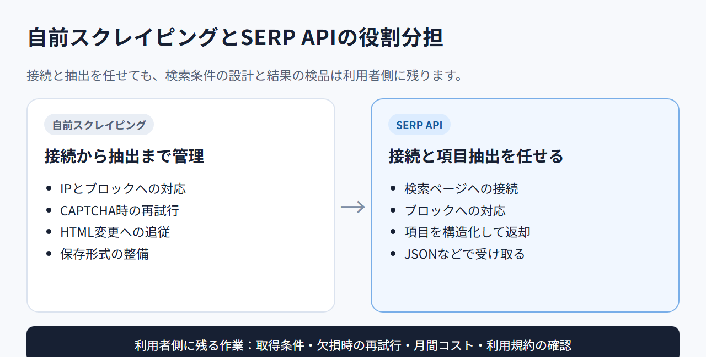
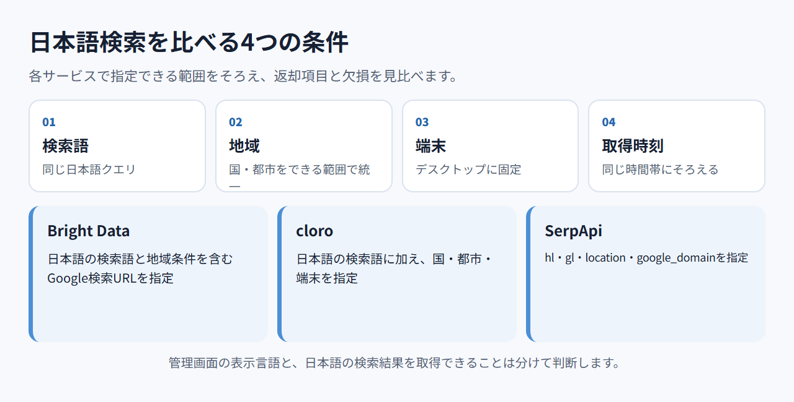

SERP APIとは？料金・無料枠・日本語検索対応を比較して選び方を解説
SERP APIは、検索順位やURL、タイトルなどを構造化データで取得する仕組みです。プロキシ管理やCAPTCHA対応、HTML解析の手間をサービス側へ任せられます。
料金だけで選ぶと、日本語検索の地域指定や課金単位の違いで迷います。Bright Data、cloro、SerpApiを、無料枠と導入方法まで含めて比べます。
SERP APIでできることと3サービスの早見
SERP APIでは、検索語と地域、言語などを指定し、結果をJSONなどで受け取れます。無料で試す最初の候補は、SERP APIが月次無料クレジットの対象となるBright Dataです。
- 取得対象：検索順位・URL・タイトルなど
- Bright Data：無料クレジット対象
- cloro：Google検索とAI回答に対応
- SerpApi：毎月250検索の無料枠
- 比較軸：課金単位・地域指定・返却項目
登録ページでは、SERP APIを含む月次無料クレジットの対象範囲を見られます。プロキシ製品は同じ月次無料枠の対象外です。
SERP APIと自前スクレイピングの違い
SERP APIは、IPの切り替えやCAPTCHA対応、検索画面の変更への追従をサービス側に任せる方法です。ただし、検索条件の設計や取得結果の検品、利用規約の確認は利用者側に残ります。

自前スクレイピングで必要になる作業
検索結果を自前で集める場合、取得コードを書くだけでは終わりません。継続して動かすには、次の作業が発生します。
- IPの管理とブロックへの対応
- CAPTCHAが出たときの再試行
- 検索画面の変更に合わせたHTML解析の修正
- エラーと欠損の記録
- JSONやCSVなど保存形式の整備
数回だけ手作業で調べるなら、自前実装のほうが早い場合もあります。毎日の順位取得やAIへの検索結果供給では、保守にかかる手間と費用まで比べる必要があります。
SERP APIに任せられる作業と残る作業
APIを使うと、検索ページへの接続やHTMLからの項目抽出をサービス側に任せられます。タイトルやURL、順位などを構造化された形で受け取れるため、そのまま集計へ進めます。
一方で、どの検索語を何時に取得するかは自社で決めます。国や都市、言語、端末の条件をそろえないと、同じ検索語でも結果は変わります。欠損時の再試行と月間コストの監視も必要です。
Bright Data・cloro・SerpApiの特徴
Webデータ収集基盤とまとめたい人にはBright Data、検索と生成AI回答を同じ枠で扱いたい人にはcloroが向いています。検索エンジン別のAPIを広く検討するなら、SerpApiも候補です。
Bright Data：無料クレジットからSERP APIを試せる

Bright Dataは、新規アカウントへ対象製品共通の月5,000クレジットを付与します。クレジットカードは不要です。SERP APIは1リクエストにつき1クレジットを使い、Web Unlocker APIなどと同じ枠を共有します。
クレジットは毎月1日に5,000へ戻り、余った分は翌月へ持ち越せません。すべてのプロキシ製品へ使える枠ではない点にも注意が要ります。
日本語の公式サイトがあり、製品概要や料金を日本語で読めます。
アカウント作成後に、SERP APIの無料対象範囲と現在の料金単位を見られます。
cloro：検索と生成AI回答を同じクレジットで扱う
cloroは、Google SearchとGoogle News、複数の生成AI回答を共通クレジットで取得するAPIです。
Freeは月額$0で毎月500クレジット、同時実行は1件です。Google Searchは非同期・バッチで3クレジットから始まり、追加ページは2クレジット、同期処理も2クレジット加算されます。500クレジットを500検索と読み替えてはいけません。
失敗抽出やシステムエラーはクレジットを消費しません。未使用分は翌月へ繰り越されません。
料金ページでは、プランごとのクレジット数とGoogle Searchの消費方法を見比べられます。
SerpApi：検索エンジン別のAPIを広く選べる
SerpApiは、Googleを含む検索エンジンの結果を構造化JSONで返すサービスです。特定の検索エンジンに合うAPIを選びたい場合の基準になります。
Freeは月額$0で毎月250検索、1時間あたり50検索です。有料のStarterは月額$25で1,000検索。成功した検索だけが数えられ、キャッシュやエラー、失敗検索は消費しません。
公式サイトから、対応する検索APIと検索条件を試すPlaygroundへの導線をたどれます。
料金と無料枠は「何回検索できるか」で比べる
月額だけでは実際の負担を比べられません。1回で使う単位、追加ページ、同期処理、失敗時の消費、未使用枠の扱いまでそろえて計算します。
料金の円換算には、1ドル=158円換算（執筆時点の目安。為替で変動）を使います。cloroのLiteは月額$30で約4,740円、SerpApiのStarterは月額$25で約3,950円が目安になります。Bright Dataは従量課金と月額枠から選べます。
無料枠は更新周期とカード要否まで見る
- Bright Data：月5,000クレジット。毎月リセット、カード不要
- cloro：月500クレジット。未使用分は期末失効
- SerpApi：月250検索。1時間あたり50検索
Bright Dataは、月額固定の無料プランではなく対象製品で共有する枠です。cloroは検索方法によって消費数が変わり、SerpApiは検索回数で示されます。「無料」という言葉だけで横並びにしないことが大切です。
1検索あたりの消費単位をそろえる
まず、月100件が無料枠に収まるかを見ます。月1,000件を超えるなら、次の単位を同じ検索件数に換算します。
- Bright Data：従量課金は1,000成功リクエストあたり$1.5
- cloro：Liteは月額$30で37,500クレジット。Google Searchは3クレジットから
- SerpApi：Starterは月額$25で1,000検索
cloroは追加ページで2クレジット、同期処理でも2クレジットが加算されます。SerpApiは成功した検索数が基準です。月10,000件なら、必要な追加ページと同期処理、再試行を含めて計算します。
解約・返金・未使用枠も費用に含める
- Bright Data：カード、PayPal、Alipay、Payoneer、Google Pay、Apple Payに対応。大口契約では銀行振込も選べます。Scaleはいつでも解約できますが、支払い済み料金は返金されません
- cloro：セルフサービスはカード決済。EnterpriseはACHまたは銀行振込に対応します。月次プランの解約は請求期間末に有効となり、返金はありません
- SerpApi：いつでもプラン変更や解約ができ、更新日までは残りの検索枠を利用できます。契約から7日以内かつ使用量20%以下なら全額返金の対象です
Scaleは月額$499で380,000リクエストを含み、超過分は1,000件あたり$1.3です。法人名義の請求書が必要なら、契約前に各社へ発行条件を問い合わせます。税務上の扱いは税理士に確認してください。
無料クレジットの対象製品と現在の消費単位を登録画面から確かめられます。
日本語検索と地域指定は同じ条件で試す
同じ日本語クエリでも、国や都市、言語、端末が違えば検索結果は変わります。各社で指定できる範囲内で条件をできるだけそろえ、順位だけでなく返却項目と欠損も比べます。

言語・国・都市・端末の条件を固定する
試す条件は、次のように先に決めておきます。
- Bright Data：日本語の検索語と地域条件を含むGoogle検索URLをurlへ渡す
- cloro：日本語の検索語に加え、国・都市・端末を指定する
- SerpApi：hl、gl、location、google_domainで言語と地域を指定する
- 3社ともデスクトップと同じ取得時刻で試す
cloroでは国・都市・端末までをそろえます。独立した言語指定を前提にせず、日本語の検索語と返却内容を見比べます。管理画面の日本語化と、日本語の検索結果を取得できることも分けて考えます。
順位だけでなく返却項目と欠損を見る
自然検索の順位とURLだけで足りるのか、広告や「他の人はこちらも質問」、ローカル枠、画像も必要なのかを決めます。ページネーションと日本語スニペットの有無も確認します。
JSONのキー名はサービスごとに違います。必要な項目が欠けていないか、同じ条件で再取得できるかを記録します。速度と精度は今回実測していないため、各社の優劣は断定しません。
SERP APIを導入して最初の1件を取得する
最初はAPIキーを発行し、日本語クエリを1件だけ送ります。Bright Dataの非同期APIでは、発行されたresponse_idを使って結果を取得し、JSONを保存します。
- アカウントを登録する
- APIキーを発行する
- 日本語の検索語と地域条件を決める
- cURLやJavaScriptから送信する
- 返ってきたJSONを保存する
- 管理画面で消費数を照合する
APIキーを発行して安全に管理する
APIキーはソースコードへ直接書かず、環境変数から読み込みます。公開リポジトリ、画面共有、エラーログに残らない設定も必要です。
Bright DataのAPIは、Authorization: BearerヘッダーにAPIキーを入れて認証します。キーを誤って公開した場合は、すぐに無効化して再発行します。
同じ日本語クエリを送る最小コード
Bright Dataで非同期リクエストを送る最小例です。事前にSERP APIゾーンを作り、非同期リクエストを有効にします。YOUR_ZONE_NAMEとYOUR_API_KEYは自分の値へ置き換えてください。
curl --request POST --url 'https://api.brightdata.com/serp/req?zone=YOUR_ZONE_NAME' --header 'Authorization: Bearer YOUR_API_KEY' --header 'Content-Type: application/json' --data '{"query":{"q":"法人向け パスワード管理"},"brd_json":"json"}'
返ってきたresponse_idを次のURLへ入れると、構造化された結果をresults.jsonへ保存できます。
curl --silent --compressed 'https://api.brightdata.com/unblocker/get_result?response_id=YOUR_RESPONSE_ID' --header 'Authorization: Bearer YOUR_API_KEY' --output results.json
cloroとSerpApiでは、エンドポイントと認証方法が異なります。各社のコード例を使い、前節で決めた範囲の検索条件へ読み替えます。
JSONを保存して必要な項目を取り出す
最初のレスポンスは加工せずに保存します。そのうえで、順位、タイトル、リンクに当たる項目を抽出します。取得件数や欠損、エラー、消費した課金単位も同じ記録に残します。
元のレスポンスがあれば、項目が消えたときに原因を追えます。保存期間とアクセス権限はデータに合わせて決めます。
登録後はAPIキーを発行し、SERP APIの接続設定へ進めます。
契約前に確かめたい5つのポイント
有料契約の前に、返却項目、地域の再現性、処理量、課金、解約条件を同じ順番で比べます。無料枠の数字が大きくても、自然検索や広告など必要な検索面が返らなければ候補にはなりません。
- 必要な検索面が返るか
- 日本・都市・端末の条件を再現できるか
- 同時実行と待ち時間が処理量に足りるか
- 失敗と再試行で何が課金されるか
- 解約、返金、未使用枠はどう扱われるか
無料枠で5クエリを試す
指名語、一般語、地域名を含む語、ニュース性のある語、結果が少ない語を1つずつ選びます。普段扱う検索語を混ぜると、自社の利用場面に近い判断材料になります。
各クエリで返却項目、欠損、待ち時間、消費数を記録します。この記事では実測値を載せていません。契約前に自分の条件で試す工程は省かないでください。
利用規約とデータの扱いを確認する
API事業者の規約だけでなく、取得対象サイトの規約やrobots.txtも読みます。個人情報や著作物を保存する場合は、取得目的と保存期間、社内の閲覧権限も決めておきます。
収集や二次利用の可否を判断できないときは、法務担当者や専門家へ相談します。APIを契約したこと自体が、取得データの利用許諾になるわけではありません。
SERP APIのよくある質問
導入前に迷いやすいのは、一般的な検索APIとの違いと無料枠の範囲です。スクレイピングやAIへの組み込みも、用途とデータの扱いを分けて考えます。
SERP APIと一般的なWeb検索APIの違いは？
SERP APIは、実際の検索結果ページに並ぶ順位やURLなどを構造化して返します。一般的なWeb検索APIには、独自インデックスから候補ページや要約を返すものもあり、同じ検索語でも目的が異なります。
無料だけで使い続けられる？
3社とも無料枠がありますが、更新周期と消費単位が違います。小規模なら収まる場合があるものの、追加ページや同期処理を含めた月間消費数で判断してください。
SERP APIを使えばスクレイピングの規約確認は不要？
不要にはなりません。契約前に、取得対象の規約とデータの利用目的を確認します。
AIエージェントやRAGにも使える？
構造化した検索結果をAIへ渡す用途にも使えます。ただし、引用元URLと取得時刻を残し、重複や古い情報、誤情報を別に検査する仕組みが必要です。
まとめ：日本語検索を無料枠で試してから選ぶ
まず各社で指定できる範囲の日本語クエリと地域条件をそろえ、必要な検索面と欠損、課金単位を見ます。無料で試す最初の候補はBright Dataです。有料契約は、必要な検索面と月間件数、決済条件を比べて決めます。検索と生成AI回答を同じ枠で扱うならcloro、検索エンジン別APIの広さを重視するならSerpApiが候補です。
- 必要な返却項目を決める
- 無料枠で5クエリを試す
- 月間件数から必要な料金枠を出す
SERP APIは月次無料クレジットの対象です。対象外のプロキシ製品と混同せず、まず検索1件から試せます。